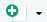
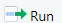
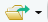

1 Introduction to RStudio
There are a number of software packages based on the R programming language aimed at making writing and running analyses easier for users. They all run R in the background but look different and contain different features. RStudio has been chosen for this course as it allows users to create script files, allowing code to be re-run, edited, and shared easily. RStudio also provides tools to help easily identify errors in R code, integrates help documentation into the main console and uses colour-coding to help read code at a glance.
Before installing RStudio, we must ensure that R is downloaded onto the machine. R is available to download for free for Windows, Mac, or Linux from the CRAN website.
Rstudio is also free to download from the Posit website.
1.1 The RStudio console window
The screenshot below shows the RStudio interface which comprises of four windows:

1.1.1 Window A: R script files
All analysis and actions in R are carried out using the R syntax language. R script files allow us to write and edit code before running it in the console window.
Style tip
Limit script files to 80 characters per line to ensure it is readable.
RStudio has an option to add a margin that makes this easier to adhere to. Under the Tools drop-down menu, select Global options. Select Code from the list on the right, then under the Display tab, tick the Show margin box.
If this window is not visible, create a new script file using File -> New File -> R Script option from the drop-down menus or clicking the  icon above the console and selecting ‘R Script’. This will open a new, blank script file. More than one script file can be open at the same time.
Code entered into the script file does not run automatically. To run commands, highlight the code from the script file and click the  icon above the top right corner of the script window (this can be carried out by pressing Ctrl + Enter in Windows or Command + Enter on a Mac computer). Multiple lines of code can be run at once.
The main advantage of using the script file rather than entering the code directly into the console is that it can be saved, edited and shared. To save a script file, use File -> Save As… from the drop down menu, click the icon at the top of the window, or use the keyboard shortcut ctrl + s for Windows and command + s for Mac. It is important to save the script files at regular intervals to avoid losing work.
Style tip
Script file names should be meaningful, lower case, and end in .R. Avoid using special characters in file names, including spaces. Use _ instead of spaces.
Where files should be run in a specific order, prefix the file name with numbers.
Past script files can be opened using File -> Open File… from the drop-down menu, by clicking the  icon, or using the keyboard shortcut ctrl + o for Windows and command + o for Mac, then selecting a *.R file.
1.1.2 Window B: R console
The R console window is where all commands run from the script file, results (other than plots), and messages, such as errors, are displayed. Commands can be written directly into the R console after the > symbol and executed using Enter on the keyboard. It is not recommended to write code directly into the console as it is cannot be saved or replicated.
Every time a new R session is opened, details about version and citations of R will be given by default. To clear text from the console window, use the keyboard shortcut control + l (this is the same for both Windows and Mac users). Be aware that this clears all text from the console, including any results. Before running this command, check that any results can be replicated within the script file.
1.1.3 Window C: Environment and history
This window lists all data and objects currently loaded into R, and is not available in the basic R software. More details on the types of objects and how to use the Environment window are given in later sections.
1.1.4 Window D: Files, plots, packages and help
This window has many potential uses: plots are displayed and can be saved from here, and R help files will appear here. This window is only available in the RStudio interface and not in the basic R package.
Exercise 1
- Open a new script file if you have not already done so.
- Save this script file into an appropriate location.